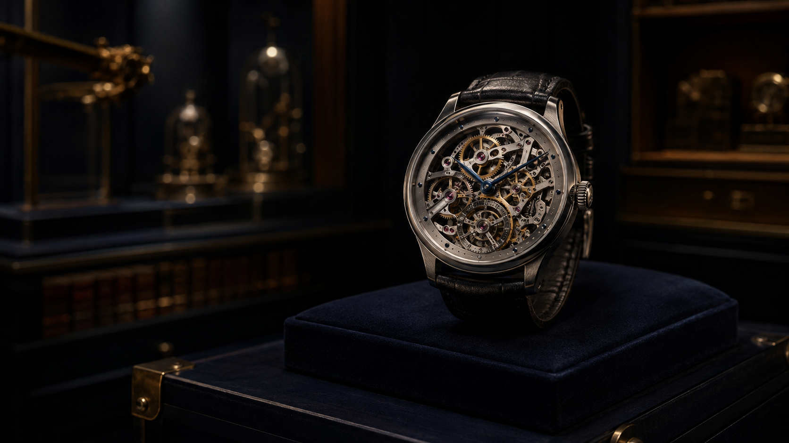
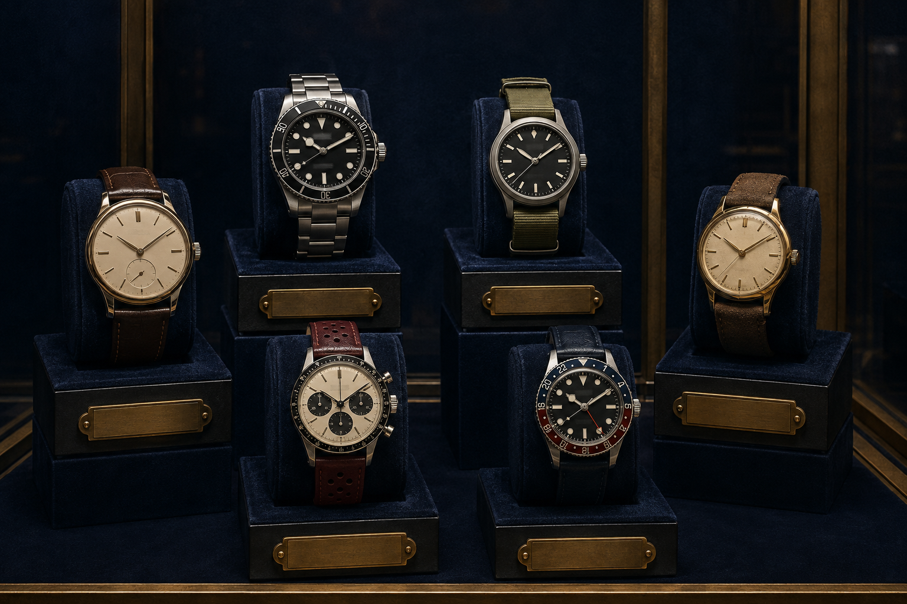

WORKSHOP JOURNAL
Notes from the
moving world.

DRESS · 7 MINChoosing a Dress Watch
How proportion, restraint and context shape an elegant watch choice.
DIVE · 8 MINReading a Dive Watch
Understand bezels, lume, water resistance and everyday practicality.

FIELD · 9 MINField Watch Essentials
A clear guide to legibility, durability and purposeful simplicity.
CHRONOGRAPH · 10 MINChronograph Basics
Read pushers, scales and timing layouts without unnecessary complexity.
GMT · 11 MINThe GMT Travel Guide
How independent hands and 24-hour scales support thoughtful travel.
HERITAGE · 7 MINHeritage Without Hype
Evaluate archival influence, provenance and design continuity responsibly.
DRESS · 8 MINA Guide to Watch Proportion
Balance diameter, length, thickness and wrist presence with confidence.
DIVE · 9 MINCaring for a Dive Watch
Practical rinsing, seal checks and responsible water-use habits.
FIELD · 10 MINField Watches and Straps
Match materials, taper and hardware to comfort and character.
CHRONOGRAPH · 11 MINUsing a Chronograph Well
A calm introduction to elapsed-time reading and mechanical care.
GMT · 7 MINReading a GMT Bezel
Track a second or third time zone through simple visual logic.
HERITAGE · 8 MINBuilding a Personal Watch Archive
Document stories, service history and ownership choices that matter.